SHEAR_MECHANICAL_REQUIREMENT_ONLY。原生真实坐标与存活拓扑；新裂面润湿未解决。
EXPLORATORY_TARGET_NOT_MET · 20问中文报告
Defined mechanical fields on actual original surface at rest. Arrows: 1000 Pa = 71.4 µm. Counter-rotating planar Gaussian streamfunction is inspired by vortex morphology, not a reproduction of a bubble solution.
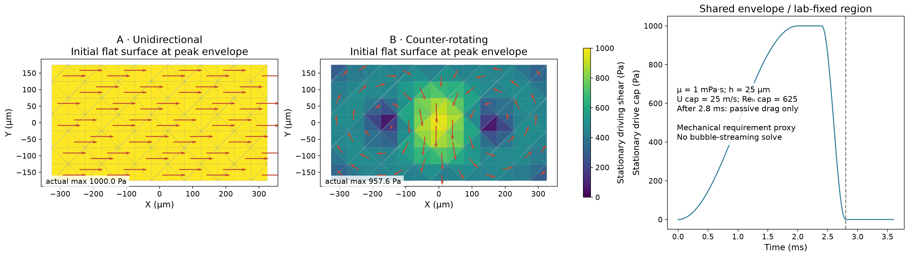
Actual original-ID facets at each accepted state, area/normal updated. Top: full body; bottom: retained-facet detail with actual coordinates, no deformation magnification. Broken-edge unsupported triangles are omitted from loads, not removed from the material graph. Axes fit actual positions per panel.
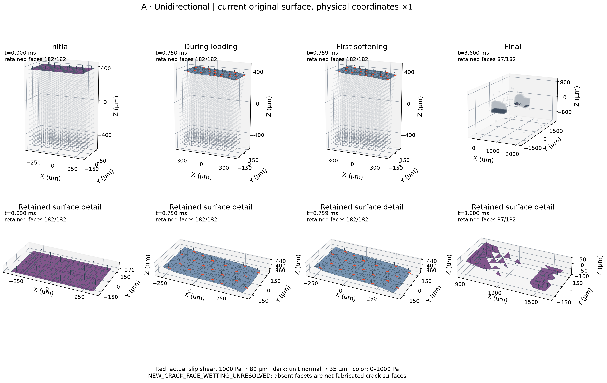
Actual original-ID facets at each accepted state, area/normal updated. Top: full body; bottom: retained-facet detail with actual coordinates, no deformation magnification. Broken-edge unsupported triangles are omitted from loads, not removed from the material graph. Axes fit actual positions per panel.
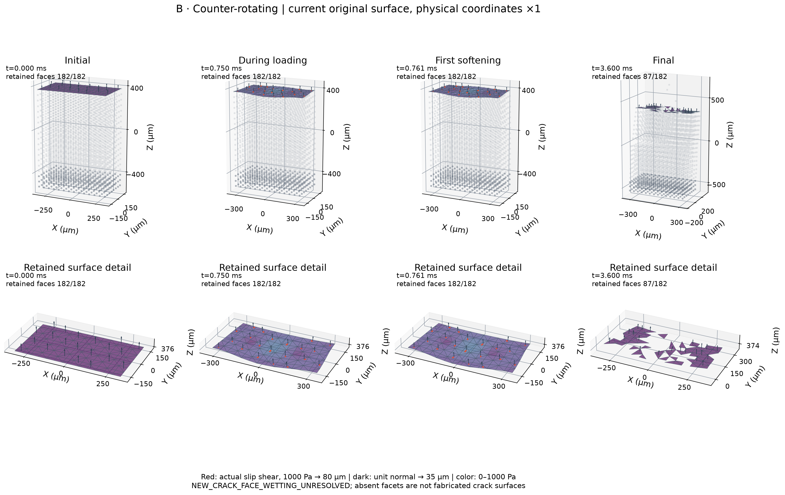
Actual native external-force arrays at each mode’s first failure, surface detail with physical coordinates. Positive 1/3 barycentric map uses current triangles; no signed affine V3 weights. Facet arrows follow Figure 2 scale; native force arrows 1 µN = 50 µm.
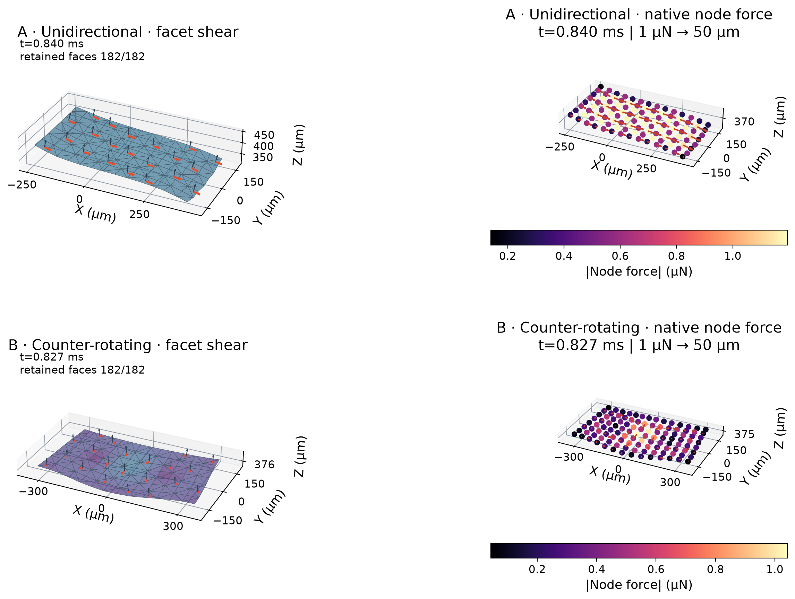
Current coordinates of actual damaged original bonds, anchors retained. A colored endpoint is not an inferred wetted crack face. Final bridges cross the historical diagnostic upper volume; no bonds are deleted by analysis.
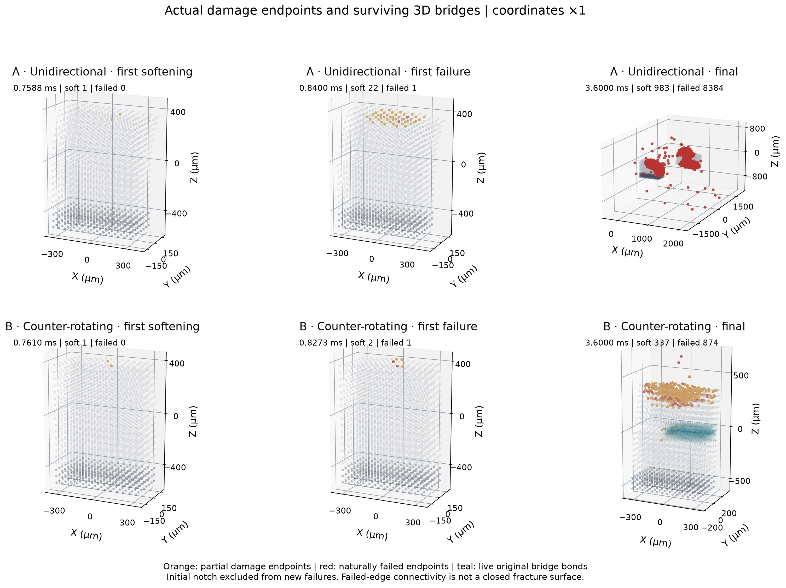
Independent graphs: failed bonds define damage clusters; surviving bonds define real material components. Initial cuts and contact do not count as natural fractures or cohesion.
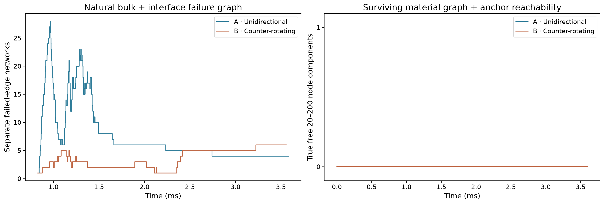
Full actual final extents. Original surviving material bonds and anchor reachability alone identify components; contact/proximity never merges fragments. Colors may repeat.
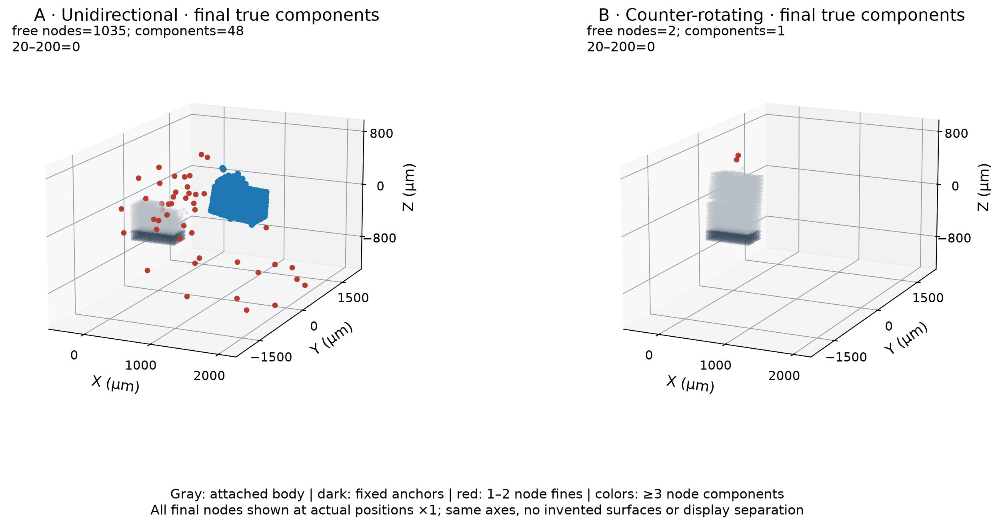
Zero bins remain zero. Equal original material volumes determine mass; anchors excluded. Requested bins cross the 20-node target threshold; exact 20–200 is reported separately.
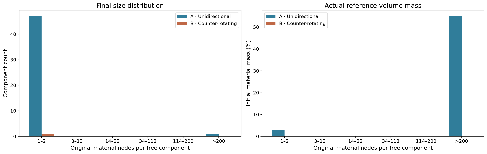
Work uses current force along actual native drift. Passive drag is physical-proxy dissipation, separate from irreversible material damage. Numerical residual and contact activation remain explicit; no fitted energy correction.
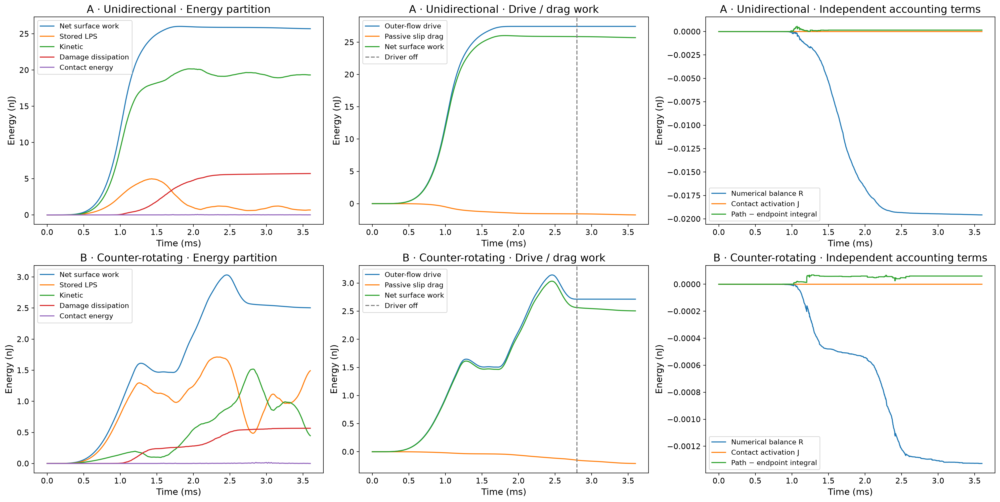
A versus B isolates the spatial mode within the new follower protocol. It does not isolate follower geometry relative to older dead-load experiments; actual slip peaks and work are not matched.
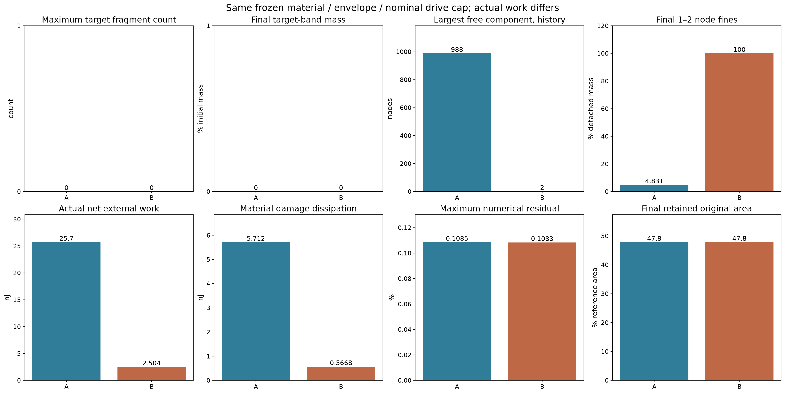
Retained original exterior faces only. Loss of all represented faces on a fragment means unresolved hydrodynamics, not a claim that its real fluid force is zero. New crack wetting remains unresolved.
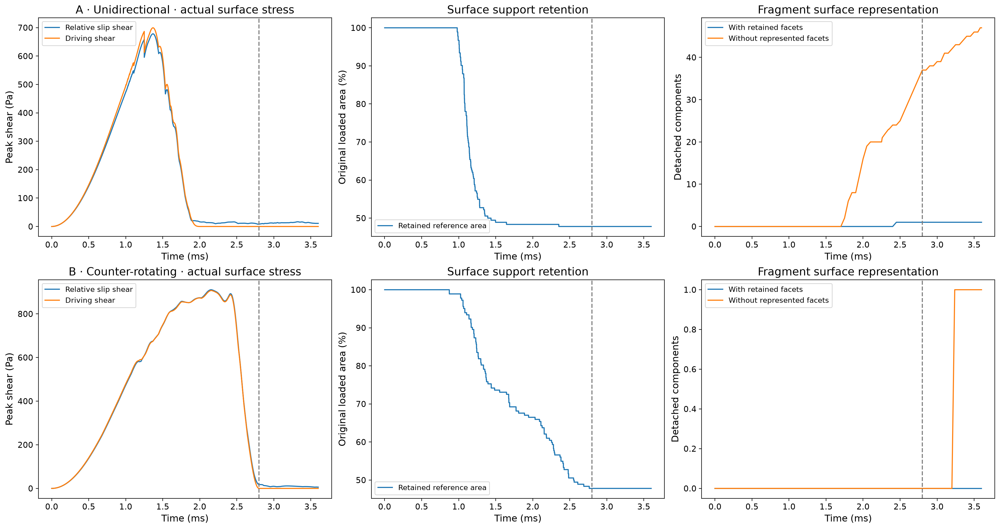